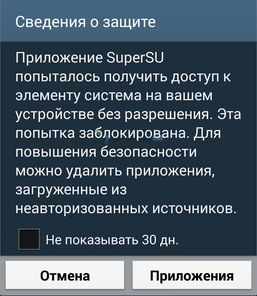

Отключаем KNOX
Актуально для аппаратов, имеющих счетчик KNOX
KNOX- это набор специализированных утилит, которые в совокупности усиливают защиту устройства и пользовательских данных.
Начиная с версии
Android 4.3 корейский гигант стал добавлять в прошивки своих смартфонов
и планшетов сервисы KNOX по умолчанию.
Это стало
отличным решением в сфере бизнеса, где на первом месте стоит не
удобство использования, а безопасность и сохранность личной информации.
Но у обычных пользователей стали появляться проблемы, особенно при наличии ROOT-прав. Наверняка вы сталкивались с ошибкой:

При
этом, полноценно вы не имеете root-прав, так как они блокируются. Но
эту проблему можно решить удалив или отключив Samsung KNOX. Мы
рассмотрим наиболее безболезненный метод отключения KNOX.
После его выполнения перестают появляться назойливые уведомления о блокировке.
Требования:
- Наличие Root прав
Приступаем!
1) Скачиваем и устанавливаем программу KNOX Disabler
2) Открываем ее и наживаем на кнопку Disable
Больше назойливые уведомления не будут вас беспокоить.
Утилита
работает со всеми популярными смартфонами: Samsung Galaxy S5, Galaxy S4
(Mini и обычные версии), Note, Mega и планшетами: Note 10.1 (2014). Tab
S. И это не полный список устройств.